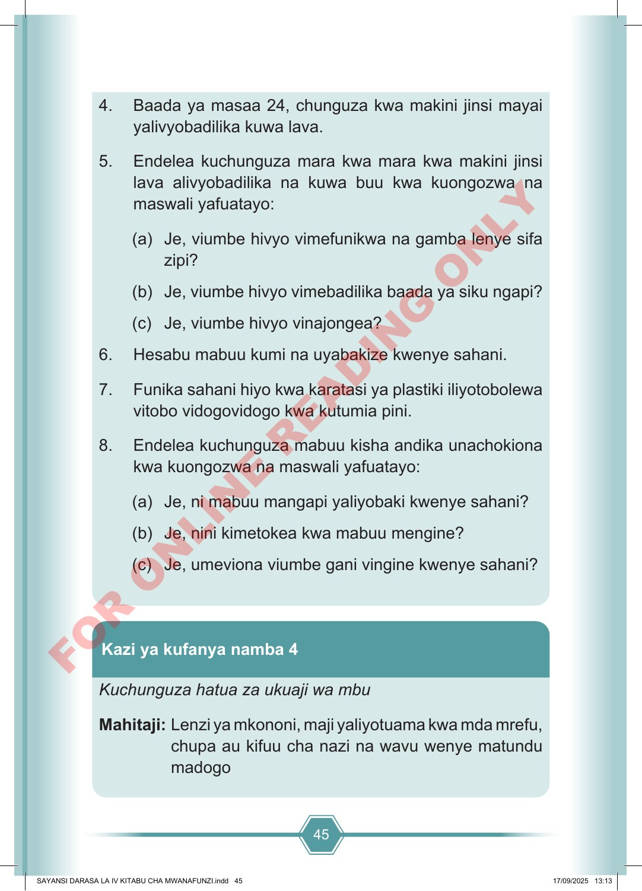

45 4. Baada ya masaa 24, chunguza kwa makini jinsi mayai yalivyobadilika kuwa lava. 5. Endelea kuchunguza mara kwa mara kwa makini jinsi lava alivyobadilika na kuwa buu kwa kuongozwa na maswali yafuatayo: (a) Je, viumbe hivyo vimefunikwa na gamba lenye sifa zipi? (b) Je, viumbe hivyo vimebadilika baada ya siku ngapi? (c) Je, viumbe hivyo vinajongea? 6. Hesabu mabuu kumi na uyabakize kwenye sahani. 7. Funika sahani hiyo kwa karatasi ya plastiki iliyotobolewa vitobo vidogovidogo kwa kutumia pini. 8. Endelea kuchunguza mabuu kisha andika unachokiona kwa kuongozwa na maswali yafuatayo: (a) Je, ni mabuu mangapi yaliyobaki kwenye sahani? (b) Je, nini kimetokea kwa mabuu mengine? (c) Je, umeviona viumbe gani vingine kwenye sahani? Kuchunguza hatua za ukuaji wa mbu Mahitaji: Lenzi ya mkononi, maji yaliyotuama kwa mda mrefu, chupa au kifuu cha nazi na wavu wenye matundu madogo Kazi ya kufanya namba 4 SAYANSI DARASA LA IV KITABU CHA MWANAFUNZI.indd 45 SAYANSI DARASA LA IV KITABU CHA MWANAFUNZI.indd 45 17/09/2025 13:13 17/09/2025 13:13 F O R O N L I N E R E A D I N G O N L Y